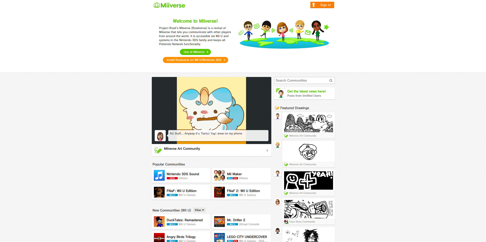
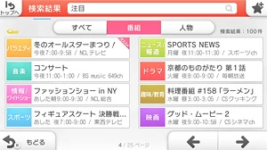

 Roséverse The main Miiverse revival experience for Wii U and off-device. Share messages, drawings, and screenshots just like the original Miiverse. Open Roséverse
 Nintendo TVii The only Nintendo TVii revival. Discover another way of watching TV, interact with shows, and post comments about your favorite shows and movies! Learn more